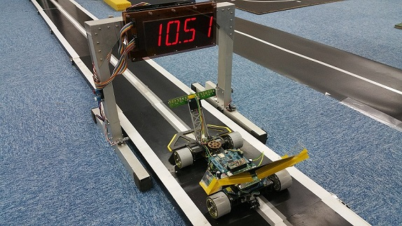

画像処理ライントレーサー（仮）
０．はじめに
このページはOIT Advent Calendar 2016の記事です。
また、私は普段ブログを書いていないためこのページはHTMLで書いています。そのため、見た目が微妙ですがご了承ください。
では、簡単に自己紹介から、
OITのIS科所属のB14074です。
部活動として、UbiquitousRobotLab. 学生プロジェクトとして、競技プログラミングをやっています。
趣味は、高校の部活からやっているロボット制作です。
このページは、その趣味でやっている内容の一部を超適当に力尽きるまで書いていきます。
１．ライントレーサーとは
ライントレーサーとは、コースの中央にある線をセンサーで探しながら、その上を走る車型ロボットです。
マシンの先端についているものが赤外線センサーです。
このセンサーでコースの白黒を判断し、白線と車体のズレを判定。
そして、ズレを修正するようにハンドルを曲げながら走行させます。
２．画像からライン位置を判断する
赤外線センサーの代わりに、カメラを使用して走行させます。

このカメラで撮影すると下のような画像が得られます。
そして、実際は白線の位置が判断できればいいので、一行だけ使用します。
また、一番明るい色の白は128,一番暗い色の黒は0として、数値を配列に格納します。
なお、横のbit数は１２８個とします。
すると、配列の各数値をグラフ化すると以下のようになります。
手書きですいません
実際は、白黒の境目がぼやけて見えるので、矩形波ではなく正弦波？曲線？になります。
さらに、このグラフを微分します。
この数値から、最大値と最小値の添え字を見つけます。
すると、MAX-MINが白線の太さ。
（MAX+MIN）/２が白線の位置と判断できます。
３．ライン位置からハンドルを動かす
次は、ライン位置が分かったので、ハンドルを曲げる力を計算します。
方法そして、PID制御とか古典制御とよばれる方式を使用します。
解説は大変（できそうにない）なので省略します。
そろそろ眠くなってきたので終わります。
読んでくれた方、ありがとうございます。興味があれば、大学内で私を探してください。